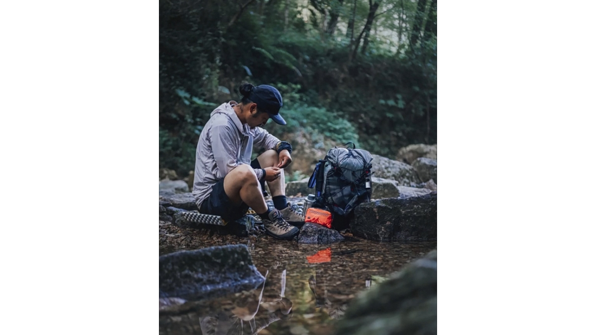

Climate Adaptation: Why Outdoor Retailers Are Rethinking First Aid Kits for Extreme Weather
JUN 22, 2026

Climate Is Becoming Less Predictable
Outdoor activities haven't changed. The weather has.
A hiking trip that begins under clear skies can quickly turn into intense heat, heavy rain or a sudden drop in temperature. For outdoor enthusiasts, adapting to changing weather has become just as important as choosing the right backpack or footwear.
For outdoor retailers, this creates an interesting shift in customer demand. Consumers are no longer looking only for equipment. They are looking for products that help them stay prepared when conditions suddenly change.
The question for buyers is becoming: How can we offer practical climate-ready products without making our product range more complicated?
When Heat and Cold Can Exist on the Same Trip
Heat exhaustion and hypothermia are often seen as completely different emergencies. In reality, outdoor users may encounter both during a single journey.
A summer hike may begin under intense sunshine, followed by heavy rain or mountain winds that rapidly reduce body temperature once activity stops. Helping users respond to both situations requires more than a standard first aid pouch. It requires a system.
Component One: Immediate Cooling Without Refrigeration
When someone develops heat exhaustion, reducing body temperature becomes a priority. Traditional ice packs work well if refrigeration is available, but remote trails rarely provide that luxury.
That's why our Outdoor PLUS System includes squeeze-activated Instant Cold Packs. Once activated, they cool within seconds without electricity or ice, making them suitable for hiking, overlanding, camping and other remote outdoor environments.
For retailers, this transforms a simple first aid kit into a climate-response product with clear customer value.
Component Two: Making Decisions with Real Information
One of the biggest challenges during outdoor emergencies is uncertainty. Is someone simply tired, or are they developing heat illness? Guesswork often delays the right decision.
Instead of relying only on observation, our Outdoor PLUS System integrates a medical-grade Digital Thermometer, allowing users to monitor body temperature quickly and make more informed decisions about whether to continue, rest or seek emergency assistance.
Sometimes, one simple reading provides the confidence to make the right decision.
Building Outdoor Systems Instead of Individual Products
Many outdoor accessories solve one problem. We prefer designing systems that address an entire scenario.
Our Outdoor System combines components that work together during changing weather conditions:
- Instant Cold Pack for rapid cooling.
- Digital Thermometer for temperature monitoring.
- Emergency Blanket for heat retention.
- Additional trauma and first aid essentials depending on kit level.
Rather than selecting products individually, retailers can offer complete solutions for different outdoor users:
- MINI - Everyday hiking and casual outdoor activities.
- STANDARD - Camping and family adventures.
- PLUS - Remote expeditions and environments where evacuation may be delayed.
This modular structure allows distributors and retailers to expand their safety category without adding unnecessary complexity.
Supporting Outdoor Brands with Reliable Manufacturing
Launching outdoor safety products requires more than attractive packaging. Retailers need reliable supply, consistent product quality and internationally recognised manufacturing standards.
At GoSafeMed, we work with experienced manufacturing partners specialising in emergency medical products for global markets. Our Outdoor System supports OEM and ODM projects backed by CE, FDA Registration and ISO 13485 quality systems.
Whether you're introducing your first safety collection or expanding an existing outdoor category, we help build practical products designed for real outdoor environments.